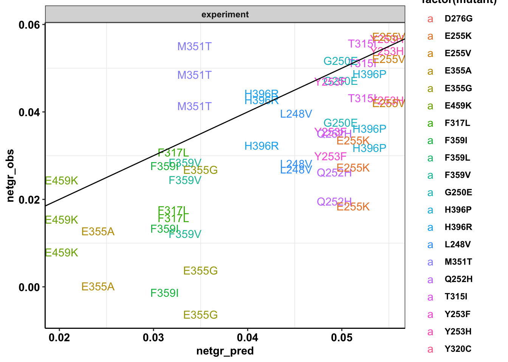
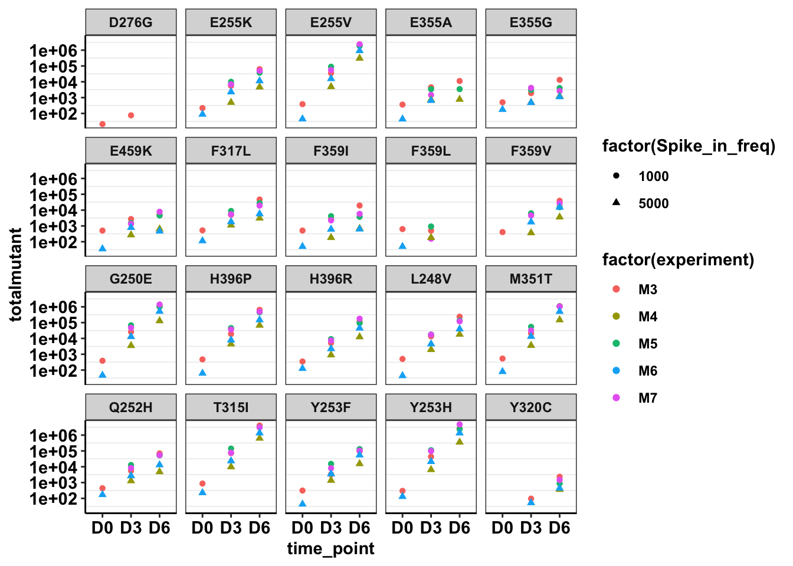

growthrate_plots
Haider Inam
4/2/2020
Last updated: 2020-09-29
Checks: 7 0
Knit directory: duplex_sequencing_screen/
This reproducible R Markdown analysis was created with workflowr (version 1.6.2). The Checks tab describes the reproducibility checks that were applied when the results were created. The Past versions tab lists the development history.
Great! Since the R Markdown file has been committed to the Git repository, you know the exact version of the code that produced these results.
Great job! The global environment was empty. Objects defined in the global environment can affect the analysis in your R Markdown file in unknown ways. For reproduciblity it’s best to always run the code in an empty environment.
The command set.seed(20200402) was run prior to running the code in the R Markdown file. Setting a seed ensures that any results that rely on randomness, e.g. subsampling or permutations, are reproducible.
Great job! Recording the operating system, R version, and package versions is critical for reproducibility.
Nice! There were no cached chunks for this analysis, so you can be confident that you successfully produced the results during this run.
Great job! Using relative paths to the files within your workflowr project makes it easier to run your code on other machines.
Great! You are using Git for version control. Tracking code development and connecting the code version to the results is critical for reproducibility.
The results in this page were generated with repository version f368371. See the Past versions tab to see a history of the changes made to the R Markdown and HTML files.
Note that you need to be careful to ensure that all relevant files for the analysis have been committed to Git prior to generating the results (you can use wflow_publish or wflow_git_commit). workflowr only checks the R Markdown file, but you know if there are other scripts or data files that it depends on. Below is the status of the Git repository when the results were generated:
Ignored files:
Ignored: .Rhistory
Ignored: .Rproj.user/
Untracked files:
Untracked: 10kmutants_nowt.csv
Untracked: 10kmutants_wt_1_1.csv
Untracked: Rplot.png
Untracked: Rplot01.pdf
Untracked: allele_freq_enrichment_sim.pdf
Untracked: allelefrequencies_counts_D3_paired.pdf
Untracked: allelefrequencies_counts_D6_paired.pdf
Untracked: allelefrequencies_wt_counts_D3_paired.pdf
Untracked: allelefrequencies_wt_counts_D6_paired.pdf
Untracked: allmuts_dose_response.pdf
Untracked: analysis/Adding_Confidence_Intervals.Rmd
Untracked: analysis/bcrabl_hill_ic50s.csv
Untracked: analysis/column_definitions_for_twinstrand_data_06062020.csv
Untracked: analysis/dose_response_curve_fitting_with_errorbars.Rmd
Untracked: analysis/multinomial_sims.Rmd
Untracked: analysis/mutagenesis_radar_chart.Rmd
Untracked: analysis/signatures_barplot.pdf
Untracked: analysis/simple_data_generation.Rmd
Untracked: analysis/twinstrand_growthrates_simple.csv
Untracked: analysis/twinstrand_maf_merge_simple.csv
Untracked: analysis/wildtype_growthrates_sequenced.csv
Untracked: bcrablwt_dose_response.pdf
Untracked: code/microvariation.normalizer.R
Untracked: count_enrichment_sim.pdf
Untracked: data/Combined_data_frame_IC_Mutprob_abundance.csv
Untracked: data/IC50HeatMap.csv
Untracked: data/Twinstrand/
Untracked: data/gfpenrichmentdata.csv
Untracked: data/heatmap_concat_data.csv
Untracked: data/mcmc_inferred_doses.csv
Untracked: dosing_error_doseresponse.pdf
Untracked: dosing_error_doseresponse_forgrant.pdf
Untracked: dosing_normalization_standard_deviations.pdf
Untracked: dosing_normalization_stdevs_paired.pdf
Untracked: dosing_normalization_stdevs_paired_wt.pdf
Untracked: e255k_dose_response.pdf
Untracked: e255k_initial_spikins_figure.pdf
Untracked: enrichment_simulations_3mutant_MAF.pdf
Untracked: enrichment_simulations_3mutant_count.pdf
Untracked: figures_archive/
Untracked: inferred_doses_barplot_werrorbars.pdf
Untracked: inferred_doses_barplot_werrorbars_wt.pdf
Untracked: inferred_doses_caterpillar.pdf
Untracked: inferred_doses_caterpillar2.pdf
Untracked: inferred_doses_violin.pdf
Untracked: m351t_deviation.pdf
Untracked: output/archive/
Untracked: output/bmes_abstract_51220.pdf
Untracked: output/clinicalabundancepredictions_BMES_abstract_51320.pdf
Untracked: output/clinicalabundancepredictions_BMES_abstract_52020.pdf
Untracked: output/enrichment_simulations_3mutants_52020.pdf
Untracked: output/grant_fig.pdf
Untracked: output/grant_fig_v2.pdf
Untracked: output/grant_fig_v2updated.pdf
Untracked: output/ic50data_all_conc.csv
Untracked: output/ic50data_all_confidence_intervals_individual_logistic_fits.csv
Untracked: output/ic50data_all_confidence_intervals_raw_data.csv
Untracked: output/ic50heatmap_sd_ci.csv
Untracked: output/twinstrand_microvariations_normalized.csv
Untracked: output/twinstrand_simple_merge_rearranged.csv
Untracked: pooled_growth_fig_corrected_081520.pdf
Untracked: pooled_growth_fig_raw_081520.pdf
Untracked: pooled_maf_fig_raw_081520.pdf
Untracked: pooled_maf_wt_fig_raw_081520.pdf
Untracked: shinyapp/
Untracked: wildtype_growthrates_sequenced.csv
Unstaged changes:
Modified: analysis/4_7_20_update.Rmd
Modified: analysis/clinical_abundance_predictions.Rmd
Modified: analysis/enrichment_simulations.Rmd
Modified: analysis/misc.Rmd
Modified: analysis/nonlinear_growth_analysis.Rmd
Modified: analysis/spikeins_depthofcoverages.Rmd
Modified: analysis/twinstrand_spikeins_data_generation.Rmd
Deleted: data/README.md
Modified: output/twinstrand_maf_merge.csv
Modified: output/twinstrand_simple_melt_merge.csv
Note that any generated files, e.g. HTML, png, CSS, etc., are not included in this status report because it is ok for generated content to have uncommitted changes.
These are the previous versions of the repository in which changes were made to the R Markdown (analysis/growthrate_plots.Rmd) and HTML (docs/growthrate_plots.html) files. If you’ve configured a remote Git repository (see ?wflow_git_remote), click on the hyperlinks in the table below to view the files as they were in that past version.
| File | Version | Author | Date | Message |
|---|---|---|---|---|
| html | eaca616 | haiderinam | 2020-04-20 | Build site. |
| Rmd | 2bba93e | haiderinam | 2020-04-20 | wflow_publish("analysis/*.Rmd") |
| html | c2930d5 | haiderinam | 2020-04-03 | Build site. |
| html | 6af2cdc | haiderinam | 2020-04-03 | Build site. |
| html | 0b9b87b | haiderinam | 2020-04-02 | Build site. |
| Rmd | fc5b9c0 | haiderinam | 2020-04-02 | wflow_publish("analysis/*.Rmd") |
####Please change required directories this chunk if compiling in R rather than RmD
#Inputs:
conc_for_predictions=0.8
net_gr_wodrug=0.05
#Reading required tables
ic50data=read.csv("data/heatmap_concat_data.csv",header = T,stringsAsFactors = F)
# ic50data=read.csv("../data/heatmap_concat_data.csv",header = T,stringsAsFactors = F)
twinstrand_maf=read.table("data/Twinstrand/prj00053-2019-12-02.deliverables/all.mut",sep="\t",header = T,stringsAsFactors = F)
# twinstrand_maf=read.table("../data/Twinstrand/prj00053-2019-12-02.deliverables/all.mut",sep="\t",header = T,stringsAsFactors = F)
names=read.table("data/Twinstrand/prj00053-2019-12-02.deliverables/manifest.tsv",sep="\t",header = T,stringsAsFactors = F)
# names=read.table("../data/Twinstrand/prj00053-2019-12-02.deliverables/manifest.tsv",sep="\t",header = T,stringsAsFactors = F)
# twinstrand_maf_merge=read.csv("../output/twinstrand_maf_merge.csv",header = T,stringsAsFactors = F)
twinstrand_maf_merge=read.csv("output/twinstrand_maf_merge.csv",header = T,stringsAsFactors = F)
# twinstrand_simple_melt_merge=read.csv("../output/twinstrand_simple_melt_merge.csv",header = T,stringsAsFactors = F)
twinstrand_simple_melt_merge=read.csv("output/twinstrand_simple_melt_merge.csv",header = T,stringsAsFactors = F)
# ic50data_long=read.csv("../output/ic50data_all_conc.csv",header = T,stringsAsFactors = F)
ic50data_long=read.csv("output/ic50data_all_conc.csv",header = T,stringsAsFactors = F)
ic50data_long$netgr_pred=net_gr_wodrug-ic50data_long$drug_effect###Plotting 1:1000 data
ggplot(twinstrand_simple_melt_merge%>%filter(experiment%in%c("M3","M5","M7"),duration=="d3d6"),aes(x=netgr_pred,y=netgr_obs,color=factor(mutant),label=mutant))+geom_text()+geom_abline()+facet_wrap(~"experiment")+cleanupWarning: Removed 8 rows containing missing values (geom_text).
plotly=ggplot(twinstrand_simple_melt_merge%>%filter(experiment%in%c("M3","M5","M7"),duration=="d3d6"),aes(x=netgr_pred,y=netgr_obs,color=factor(experiment),label=factor(mutant)))+geom_text()+geom_abline()+cleanup
ggplotly(plotly)#trying out the dotplot verison to show the individual datapoints
plotly=ggplot(twinstrand_simple_melt_merge%>%filter(experiment%in%c("M3","M5","M7"),duration=="d3d6"),aes(x=netgr_pred,y=netgr_obs,color=factor(mutant)))+geom_boxplot(position=position_dodge(1))+geom_jitter(shape=16, position=position_jitter())+geom_abline()+cleanup
ggplotly(plotly)Warning: Removed 6 rows containing missing values (stat_boxplot).Warning: Removed 2 rows containing non-finite values (stat_boxplot).###Replicate M5 seems to be a little underapproximative. Only M7 M3 look better.
plotly=ggplot(twinstrand_simple_melt_merge%>%filter(experiment%in%c("M3","M7"),duration=="d3d6"),aes(x=netgr_pred,y=netgr_obs,color=factor(mutant)))+geom_boxplot(position=position_dodge(1))+geom_jitter(shape=16, position=position_jitter())+geom_abline()+cleanup
ggplotly(plotly)Warning: Removed 4 rows containing missing values (stat_boxplot).
Warning: Removed 2 rows containing non-finite values (stat_boxplot).###Plotting 1 in 5,000
ggplot(twinstrand_simple_melt_merge%>%filter(experiment%in%c("M3","M4","M5","M6","M7"),duration=="d3d6"),aes(x=netgr_pred,y=netgr_obs,color=factor(mutant),label=mutant))+geom_text()+geom_abline()+facet_wrap(~"experiment")+cleanupWarning: Removed 13 rows containing missing values (geom_text).
plotly=ggplot(twinstrand_simple_melt_merge%>%filter(experiment%in%c("M3","M4","M5","M6","M7"),duration=="d3d6"),aes(x=netgr_pred,y=netgr_obs,color=factor(experiment),label=factor(mutant)))+geom_text()+geom_abline()+cleanup
ggplotly(plotly)#trying out the dotplot verison to show the individual datapoints
plotly=ggplot(twinstrand_simple_melt_merge%>%filter(experiment%in%c("M3","M4","M5","M6","M7"),duration=="d3d6"),aes(x=netgr_pred,y=netgr_obs,color=factor(mutant)))+geom_boxplot(position=position_dodge(1))+geom_jitter(shape=16, position=position_jitter())+geom_abline()+cleanup
ggplotly(plotly)Warning: Removed 10 rows containing missing values (stat_boxplot).Warning: Removed 3 rows containing non-finite values (stat_boxplot).#Removing M5 and M6 makes these look better. My assumption is that things were growing slower for the M5, M6 conditions because of culture conditions.
#This may look bad. But this also represents an opportunity: You don't need to estimate the approximate growth rate in the absence of drug because it is dynamic (changing culture conditions etc). You could use counts from a no-drug control but even that isn't the best control because of plate to plate variability in growth rates. You could just look at the most resistant mutants and see how fast they're growing. From their growth rates, you can back-calculate what the exact w/o drug growth rate is.
plotly=ggplot(twinstrand_simple_melt_merge%>%filter(experiment%in%c("M3","M4","M7"),duration=="d3d6"),aes(x=netgr_pred,y=netgr_obs,color=factor(mutant)))+geom_boxplot(position=position_dodge(1))+geom_jitter(shape=16, position=position_jitter())+geom_abline()+cleanup
ggplotly(plotly)Warning: Removed 6 rows containing missing values (stat_boxplot).Warning: Removed 2 rows containing non-finite values (stat_boxplot).#As suggested above, I will modify the observed growth rate so that the w/o drug growth rate essentially derives from the observed growth rate of the most resistant cell line. Please note that I am doing this in a very roundabout way here because I am looking at the growth rate of T315I in the slow-growing cell lines, comparing it to how slow it is growing vs the mean growth rate of T315I from the other experimental days, and adding that difference in growth rate to that slow-growing experimental day.
# library(dplyr)
a=twinstrand_simple_melt_merge%>%
mutate(netgr_obs=case_when(experiment=="M5"~netgr_obs+.015,
experiment%in%c("M3","M6","M5","M4","M7")~netgr_obs))
plotly=ggplot(a%>%filter(experiment%in%c("M3","M4","M5","M6","M7"),duration=="d3d6"),aes(x=netgr_pred,y=netgr_obs,color=factor(experiment),label=factor(mutant)))+geom_text()+geom_abline()+cleanup
ggplotly(plotly)a_new=a%>%filter(experiment%in%c("M3"),duration%in%("d3d6"))
plotly=ggplot(a%>%filter(experiment%in%c("M3","M4","M5","M6","M7"),duration=="d3d6"),aes(x=netgr_pred,y=netgr_obs,color=factor(mutant)))+geom_boxplot(position=position_dodge(1))+geom_jitter(shape=16, position=position_jitter())+geom_abline()+cleanup
ggplotly(plotly)Warning: Removed 10 rows containing missing values (stat_boxplot).Warning: Removed 3 rows containing non-finite values (stat_boxplot).plotly=ggplot(a%>%filter(experiment%in%c("M3","M4","M5","M6","M7"),duration=="d3d6"),aes(x=netgr_pred,y=netgr_obs,color=factor(mutant)))+geom_boxplot(position=position_dodge(1))+geom_jitter(shape=16, position=position_jitter())+geom_abline()+cleanup
ggplotly(plotly)Warning: Removed 10 rows containing missing values (stat_boxplot).
Warning: Removed 3 rows containing non-finite values (stat_boxplot).ggplot(twinstrand_maf_merge%>%filter(tki_resistant_mutation=="True",!mutant=="NA",Spike_in_freq==1000,!experiment%in%c("Enu_3","Enu_4")),aes(x=time_point,y=AltDepth,color=factor(experiment)))+geom_point()+facet_wrap(~mutant)+cleanup
| Version | Author | Date |
|---|---|---|
| 0b9b87b | haiderinam | 2020-04-02 |
ggplot(twinstrand_maf_merge%>%filter(tki_resistant_mutation=="True",!mutant=="NA",Spike_in_freq==1000,!experiment%in%c("Enu_3","Enu_4")),aes(x=time_point,y=totalmutant,color=factor(experiment)))+geom_point()+facet_wrap(~mutant)+scale_y_continuous(trans = "log10")+cleanup
| Version | Author | Date |
|---|---|---|
| 0b9b87b | haiderinam | 2020-04-02 |
ggplot(twinstrand_maf_merge%>%filter(tki_resistant_mutation=="True",!mutant=="NA",Spike_in_freq==1000,!experiment%in%c("Enu_3","Enu_4")),aes(x=time_point,y=totalmutant,color=factor(experiment)))+geom_point()+facet_wrap(~mutant)+cleanup
| Version | Author | Date |
|---|---|---|
| 0b9b87b | haiderinam | 2020-04-02 |
#Combining 1 to 1,000 and 1 to 5,000
ggplot(twinstrand_maf_merge%>%filter(tki_resistant_mutation=="True",!mutant=="NA",!experiment%in%c("Enu_3","Enu_4")),aes(x=time_point,y=totalmutant,color=factor(experiment),shape=factor(Spike_in_freq)))+geom_point()+facet_wrap(~mutant)+scale_y_continuous(trans = "log10")+cleanup
# Looking at why 1 in 5,000 mutants look a little undersampled
#Turns out they look different because they started off with 5x less cells. Duh.
# a=twinstrand_maf_merge%>%filter(tki_resistant_mutation=="True",Spike_in_freq=="5000",experiment=="M6",mutant%in%c("T315I","G250E"))Looking at whether removing ANY variants with less than 5 ALT reads makes the correlation plots look better Answer: Yes it makes it better but mutants that defy predicitons are still there.
twinstrand_maf_merge=twinstrand_maf_merge%>%filter(!AltDepth<=5)
twinstrand_simple=twinstrand_maf_merge%>%filter(tki_resistant_mutation=="True",!is.na(mutant),!is.na(experiment))
twinstrand_simple=twinstrand_simple%>%dplyr::select("mutant","experiment","Spike_in_freq","time_point","totalmutant")
twinstrand_simple_cast=dcast(twinstrand_simple,mutant+experiment+Spike_in_freq~time_point,value.var="totalmutant")
twinstrand_simple_cast$d0d3=log(twinstrand_simple_cast$D3/twinstrand_simple_cast$D0)/72
twinstrand_simple_cast$d3d6=log(twinstrand_simple_cast$D6/twinstrand_simple_cast$D3)/72
twinstrand_simple_cast$d0d6=log(twinstrand_simple_cast$D6/twinstrand_simple_cast$D0)/144
#Check if ln(final/initial)/time is the correct formula. Also notice how I'm using days not hours
twinstrand_simple_melt=melt(twinstrand_simple_cast[,-c(4:6)],id.vars=c("mutant","experiment","Spike_in_freq"),variable.name = "duration",value.name = "netgr_obs")
twinstrand_simple_melt$drug_effect_obs=net_gr_wodrug-twinstrand_simple_melt$netgr_obs
# twinstrand_simple_melt_merge=merge(twinstrand_simple_melt,ic50data_formerge,"mutant")
twinstrand_simple_melt_merge=merge(twinstrand_simple_melt,ic50data_long,"mutant")
twinstrand_simple_melt_merge=twinstrand_simple_melt_merge%>%filter(conc%in%0.8)
a=twinstrand_simple_melt_merge%>%
mutate(netgr_obs=case_when(experiment=="M5"~netgr_obs+.015,
experiment%in%c("M3","M5","M6","M4","M7")~netgr_obs))
plotly=ggplot(a%>%filter(experiment%in%c("M3","M4","M5","M6","M7"),duration=="d3d6"),aes(x=netgr_pred,y=netgr_obs,color=factor(mutant)))+geom_boxplot(position=position_dodge(1))+geom_jitter(shape=16, position=position_jitter())+geom_abline()+cleanup
ggplotly(plotly)Warning: Removed 8 rows containing non-finite values (stat_boxplot).plotly=ggplot(a%>%filter(experiment%in%c("M3","M4","M5","M6","M7"),duration=="d3d6"),aes(x=netgr_pred,y=netgr_obs,color=factor(mutant),label=mutant))+geom_text()+geom_abline()+facet_wrap(~"experiment")+cleanup
ggplotly(plotly)plotly=ggplot(a%>%filter(experiment%in%c("M3","M4","M5","M6","M7"),duration=="d3d6"),aes(x=netgr_pred,y=netgr_obs,color=factor(experiment),label=factor(mutant)))+geom_text()+geom_abline()+cleanup
ggplotly(plotly)
sessionInfo()R version 4.0.0 (2020-04-24)
Platform: x86_64-apple-darwin17.0 (64-bit)
Running under: macOS Catalina 10.15.7
Matrix products: default
BLAS: /Library/Frameworks/R.framework/Versions/4.0/Resources/lib/libRblas.dylib
LAPACK: /Library/Frameworks/R.framework/Versions/4.0/Resources/lib/libRlapack.dylib
locale:
[1] en_US.UTF-8/en_US.UTF-8/en_US.UTF-8/C/en_US.UTF-8/en_US.UTF-8
attached base packages:
[1] parallel grid stats graphics grDevices utils datasets
[8] methods base
other attached packages:
[1] drc_3.0-1 MASS_7.3-51.5 BiocManager_1.30.10
[4] plotly_4.9.2.1 ggsignif_0.6.0 devtools_2.3.0
[7] usethis_1.6.1 RColorBrewer_1.1-2 reshape2_1.4.4
[10] ggplot2_3.3.0 doParallel_1.0.15 iterators_1.0.12
[13] foreach_1.5.0 dplyr_0.8.5 VennDiagram_1.6.20
[16] futile.logger_1.4.3 workflowr_1.6.2 tictoc_1.0
[19] knitr_1.28
loaded via a namespace (and not attached):
[1] fs_1.4.1 httr_1.4.1 rprojroot_1.3-2
[4] tools_4.0.0 backports_1.1.7 R6_2.4.1
[7] lazyeval_0.2.2 colorspace_1.4-1 withr_2.2.0
[10] tidyselect_1.1.0 prettyunits_1.1.1 processx_3.4.2
[13] curl_4.3 compiler_4.0.0 git2r_0.27.1
[16] cli_2.0.2 formatR_1.7 sandwich_2.5-1
[19] desc_1.2.0 labeling_0.3 scales_1.1.1
[22] mvtnorm_1.1-0 callr_3.4.3 stringr_1.4.0
[25] digest_0.6.25 foreign_0.8-78 rmarkdown_2.1
[28] rio_0.5.16 pkgconfig_2.0.3 htmltools_0.4.0
[31] sessioninfo_1.1.1 plotrix_3.7-8 htmlwidgets_1.5.1
[34] rlang_0.4.6 readxl_1.3.1 farver_2.0.3
[37] zoo_1.8-8 jsonlite_1.6.1 crosstalk_1.1.0.1
[40] gtools_3.8.2 zip_2.0.4 car_3.0-7
[43] magrittr_1.5 Matrix_1.2-18 Rcpp_1.0.4.6
[46] munsell_0.5.0 fansi_0.4.1 abind_1.4-5
[49] lifecycle_0.2.0 stringi_1.4.6 multcomp_1.4-13
[52] whisker_0.4 yaml_2.2.1 carData_3.0-3
[55] pkgbuild_1.0.8 plyr_1.8.6 promises_1.1.0
[58] forcats_0.5.0 crayon_1.3.4 lattice_0.20-41
[61] splines_4.0.0 haven_2.2.0 hms_0.5.3
[64] ps_1.3.3 pillar_1.4.4 codetools_0.2-16
[67] pkgload_1.0.2 futile.options_1.0.1 glue_1.4.1
[70] evaluate_0.14 lambda.r_1.2.4 data.table_1.12.8
[73] remotes_2.1.1 vctrs_0.3.0 httpuv_1.5.2
[76] testthat_2.3.2 cellranger_1.1.0 gtable_0.3.0
[79] purrr_0.3.4 tidyr_1.0.3 assertthat_0.2.1
[82] xfun_0.13 openxlsx_4.1.5 later_1.0.0
[85] survival_3.1-12 viridisLite_0.3.0 tibble_3.0.1
[88] memoise_1.1.0 TH.data_1.0-10 ellipsis_0.3.1